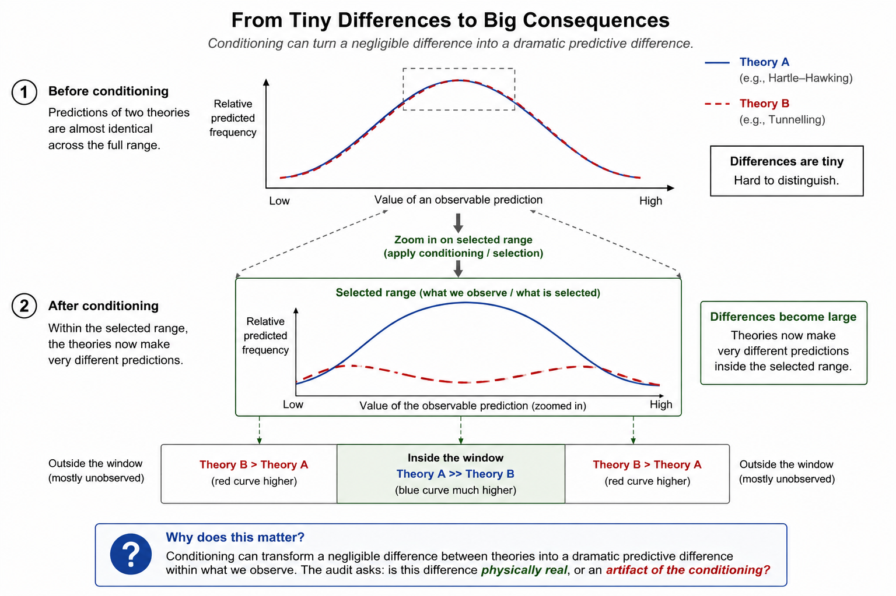

Darwin's finches demonstrated that changing environmental conditions can alter which differences become biologically important. The drought did not create larger beaks. It changed which existing differences the environment was capable of preserving. Once the population adapted, evolution continued, awaiting the next environmental change that would make another distinction significant.
The audit suggests that something structurally similar may occur in cosmology. If a proposed conditioning survives the three source requirements, it becomes a legitimate candidate for inclusion in the physical theory. The question is then no longer whether the conditioning is mathematically allowed, but what physical consequences it should have.
A central lesson emerging from the mathematical work is that every physical realization possesses only a finite capacity to preserve distinctions. External constraints do not create differences. They determine which differences the physical system is capable of maintaining. Some distinctions remain physically meaningful, while others inevitably fade away.
| Example | External constraint | Distinctions that cannot be maintained |
|---|---|---|
| Darwin's finches | The ecological environment after the drought | Small differences in beak shape that no longer influence survival |
| Finite-radius gravity (DtN) | The enclosing boundary and its elliptic response | Arbitrarily detailed information about the surrounding environment |
| Cosmological conditioning | Decoherence and admissible final conditions | Arbitrarily fine distinctions between possible histories |
Although these examples arise in completely different areas of physics, they share the same structural idea. An external constraint does not merely restrict what is possible. It determines which distinctions remain physically meaningful and which can no longer be sustained.

This behaviour is often described as an amplification of tiny differences. That description is correct, but incomplete. The differences were already present. What changes is the set of distinctions that remain physically relevant after the external constraints have acted. The conditioning does not create new physics. It determines which existing differences survive into observation.
The forest illustrates this idea intuitively. The differences were always present. Changing the question simply changes which features remain significant. Likewise, the mathematical framework developed in the accompanying paper asks whether physical constraints can determine which distinctions between possible histories remain observable.
Darwin's finches taught us that nature does not continually create new differences. Instead, changing environmental conditions continually redefine which differences matter. The mathematical work discussed in this essay explores whether quantum cosmology admits an analogous principle. If it does, the observable properties of our universe may reflect not only the laws governing every possible history, but also the physical constraints that determine which distinctions those laws are capable of preserving.